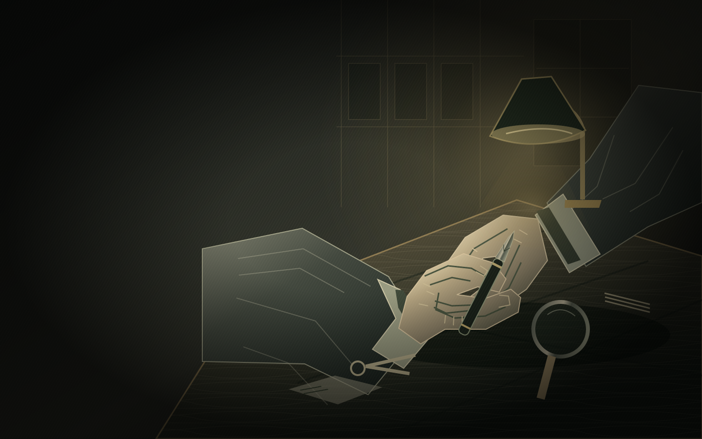
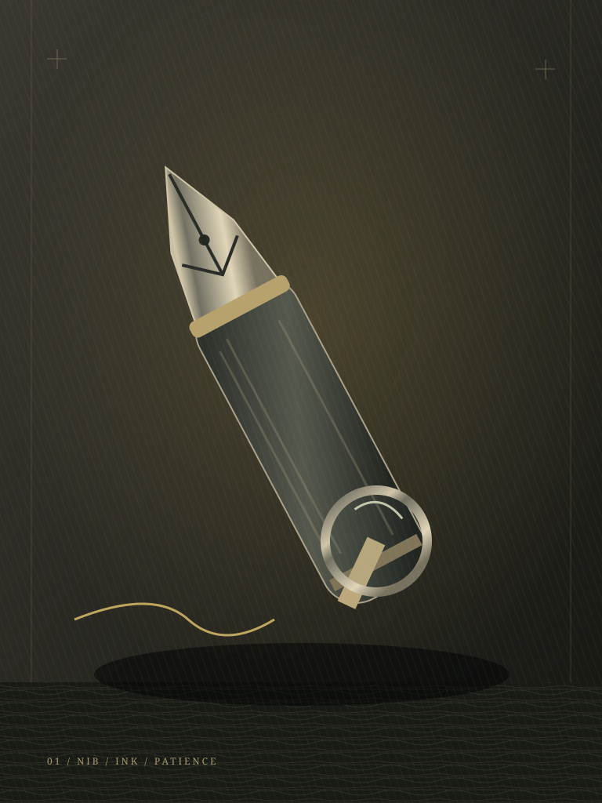

A STUDY OF HANDS, TOOLS & TIME
Vanishing
Trades.
Some things can only be made by hand.
Some stories can only be kept by listening.
Original illustration · not a historical photograph
01 / THE LIVING ARCHIVE
AN OPEN NOTEBOOK, NOT A LAST WORD
The work. The hands.
The stories in between.
A repaired nib. A sharpened blade. A small act of care.
Explore twelve trades woven into everyday life in China.
12 trades to discover
No matching trades. Try a different name or clear the filters.
02 / PLACES OF PRACTICE
FOLLOW THE THREADA country
of small workshops.
From a northern street corner to a southern courtyard, follow the tools across our illustrated atlas.
City associations follow the original creative brief. Stops are exploratory, not verified artisan addresses. Diagram is schematic, not a boundary map.
Every place has a story.
Choose a city to discover its featured trade.
03 / A CHANGING EVERYDAY
WHAT WE KEEP. WHAT WE REPLACE.Then & now.
An illustrated comparison of working contexts, not dated documentary evidence.

CONTEMPORARY CONTEXTREPLACE / REDISCOVERTHE FAMILIAR RITUAL
A DIFFERENT RHYTHM
04 / CARRY IT FORWARD
Curiosity is
the first apprenticeship.
Which craft would you like to learn?
A local demonstration of an interest form. No details are sent, stored or shared. This is not a real apprenticeship application.